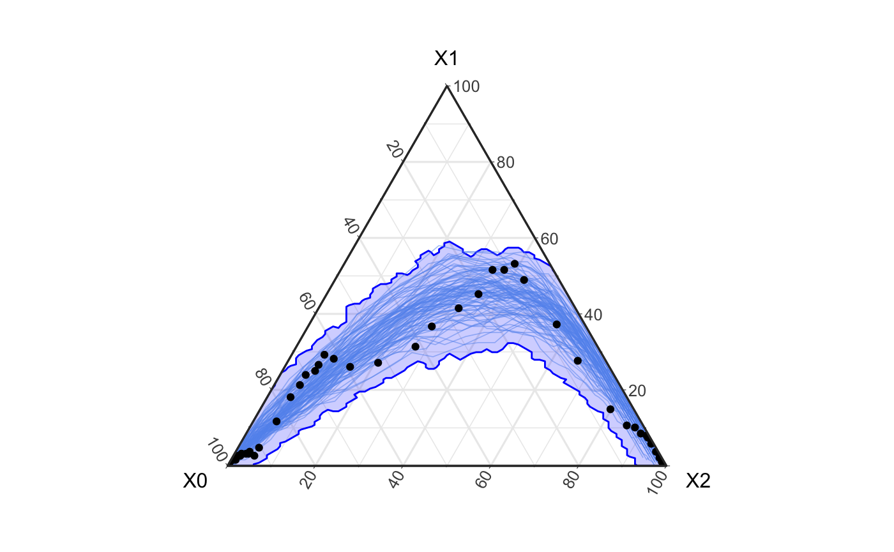

Hagelloch Measles – Fitting a Stochastic SIR Model
Source:vignettes/not-built-vignettes/hagelloch-other-models.Rmd
hagelloch-other-models.RmdOverview
In this series of vignettes, we will demonstrate epidemic analysis pipeline from EDA to dissemination using a case study of measles.

Hagelloch series vignettes
Hagelloch 1 Pre-processing and EDA
Hagelloch 2.1 Modeling and Simulation: the SIR model
Hagelloch 2.2 Modeling and Simulation: fitting a SIR model
Hagelloch 2.3.1 Modeling and Simulation: a stochastic SIR model
Hagelloch 2.3.2 Modeling and Simulation: a stochastic SIR model
Goals in this vignette
Recap our work with the Hagelloch vignette thus far
Explain
EpiCompare’s role in incorporating other models such as fromEpiModel.Include side-by-side comparison of different models
The story so far
In this series of vignettes, we have looked at the Hagelloch measles outbreak and suspect that the classes have different rates of infection. In particular, we suspect a ‘super-spreader’ event in the first class to be driving the fit of our models. This event makes it so that within that class the infection rate is very large and relatively small in the other compartments. Our model fits do not accurately capture the two peaks of infection seen in our data.
We now use the EpiModel package to simulate a network-based outbreak on the Hagelloch children.
EpiCompare works with your modeling packages
We at EpiCompare understand the importance and necessity of model variety and also the value of reproducibility in code. We aim to facilitate this important process by allowing users to more easily interact and assess different modeling paradigms.
We look at a couple here..
## WARNING: Will take a minute or two set.seed(42) nw <- network.initialize(n = 188, directed = FALSE) nw <- set.vertex.attribute(nw, "group", rep(0:2, each = 90, 30, 68)) formation <- ~edges + nodematch("group") + concurrent target.stats <- c(200, 300, 200) coef.diss <- dissolution_coefs(dissolution = ~offset(edges), duration = 5) est1 <- netest(nw, formation, target.stats, coef.diss, edapprox = TRUE) param <- param.net(inf.prob = 0.1, act.rate = 5, rec.rate = 0.1) status.vector <- c(rep(0, 90), rep(0, 30), rep(0, 67), 1) status.vector <- ifelse(status.vector == 1, "i", "s") init <- init.net(status.vector = status.vector) control <- control.net(type = "SIR", nsteps = 55, nsims = 100, epi.by = "group") sim_output <- netsim(est1, param, init, control)
fortified_net <- fortify_aggregate(sim_output, states = c("s.num", "i.num", "r.num"))
obs_groups <- hagelloch_raw %>% mutate(class = ifelse(CL == "1st class", 1, ifelse(CL == "2nd class", 2, 0))) %>% agents_to_aggregate(states = c(tI, tR), min_max_time = c(0, 55)) %>% rename(time = t, S = X0, I = X1, R = X2) ggplot() + geom_prediction_band(data = fortified_net, aes(x = X0, y = X1, z = X2, t = t, sim_group = as.numeric(sim)), alpha = .2, fill = "blue", color = "blue", conf_level = .9, pb_type = "delta_ball") + theme_bw() + coord_tern() + geom_path(data = fortified_net, aes(x = X0, y = X1, z = X2, group = factor(sim)), col = "cornflowerblue", alpha = .5, size = .3) + geom_point(data = obs_groups, aes(x = S, y = I, z = R ), col = "black")

Here we see that the above simulation covers the data quite well. However, upon closer inspection we see that the single paths (i.e. filaments) of an epidemic are generally not the shape of the observed data which has two distinct peaks.
plot(sim_output, type = "network", col.status = TRUE, at = 15, sims = 5)